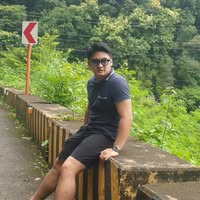

Projects


Inventory System
Online Inventory System for University of the Cordilleras, Baguio City.
View ProjectI'm a passionate web developer specializing in creating modern, responsive websites.
View My Work
Hello! I'm Vaughn Miguel C. Velasco, an aspiring and passionate IT professional and web developer based in Baguio City. I am currently pursuing a Bachelor of Science in Information Technology majoring in Web Technology at the University of the Cordilleras, where I continue to develop my technical expertise, creativity, and problem-solving skills in technology and digital innovation.
I have hands-on experience working as a Student Assistant under IT Desktop Support at the University of the Cordilleras from 2022 to 2026. Through this role, I gained experience in web development, network installation, CCTV installation and monitoring, troubleshooting and maintenance of computer systems, operating system installation, network security, switching and routing configuration, and audiovisual setup. I also strengthened my communication, teamwork, and technical support skills while working in a fast-paced, technology-driven environment.
As a developer, I specialize in creating modern, responsive, and user-friendly websites and applications. I have experience with programming languages and technologies such as Python, HTML, CSS, JavaScript, Java, C, and C++. I am passionate about both front-end and back-end development, and I enjoy building systems that are visually appealing, functional, efficient, and accessible across different platforms and devices.
Beyond web development, I also have skills in graphic design, digital marketing, video and photo editing, videography, photography, and Google Ads management. My creativity and technical knowledge allow me to combine design and functionality to produce engaging digital content and interactive online experiences. I also have experience using Microsoft Office applications such as Word, Excel, and PowerPoint for documentation, reporting, and presentations.
I continuously strive to improve my knowledge and stay updated with the latest trends and technologies in the IT industry. I have attended seminars and trainings in iOS/iPadOS troubleshooting, macOS troubleshooting, and workshops related to information disorder and social media awareness. These experiences expanded my technical capabilities and adaptability across different areas of technology.
I am a hardworking, adaptable, and motivated individual who values professionalism, continuous learning, and innovation. My goal is to contribute my skills and knowledge to projects that create impactful digital solutions while continuing to grow as a developer and IT professional. I am eager to take on new challenges, collaborate with teams, and build meaningful technologies that make a positive difference in today’s digital world.
Python, HTML, CSS, JavaScript, Java, C, C++
Responsive design, front-end development, back-end workflows, accessibility
Network installation, switching & routing, network security, OS installation
Troubleshooting, maintenance, CCTV installation & monitoring, audiovisual setup
Graphic design, digital marketing, video/photo editing, videography, photography, Google Ads
Microsoft Word, Excel, PowerPoint for documentation, reporting and presentations
Online Inventory System for University of the Cordilleras, Baguio City.
View ProjectHave a question or project idea? Send a message below or reach out directly using the options on the right.
I’m available for collaborations, freelance work, or full-time opportunities.
Or contact me directly:
Email: bojolito1620@gmail.com
Facebook: facebook.com/vaughn.velasco.56